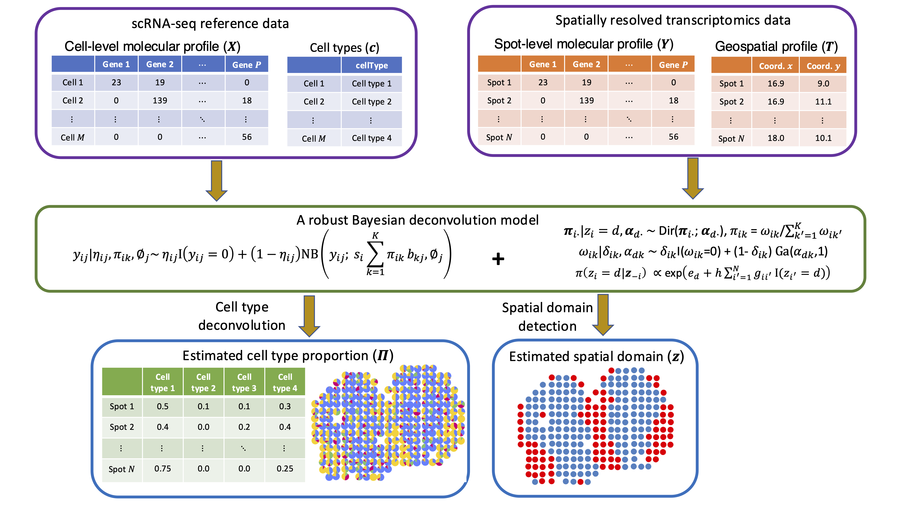
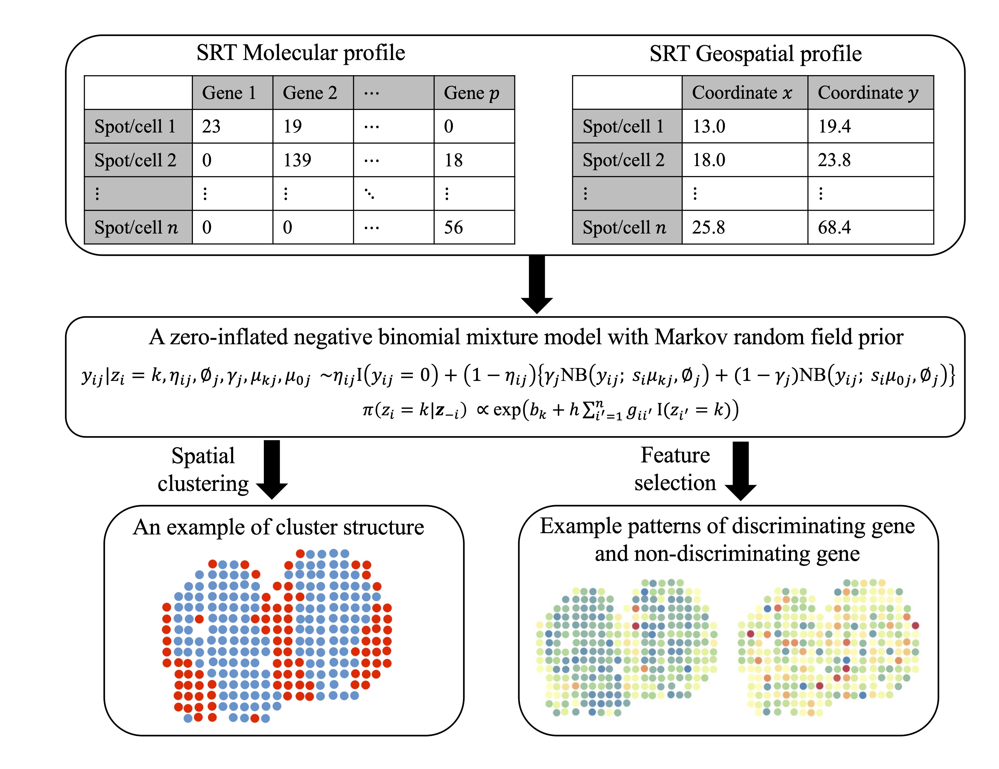
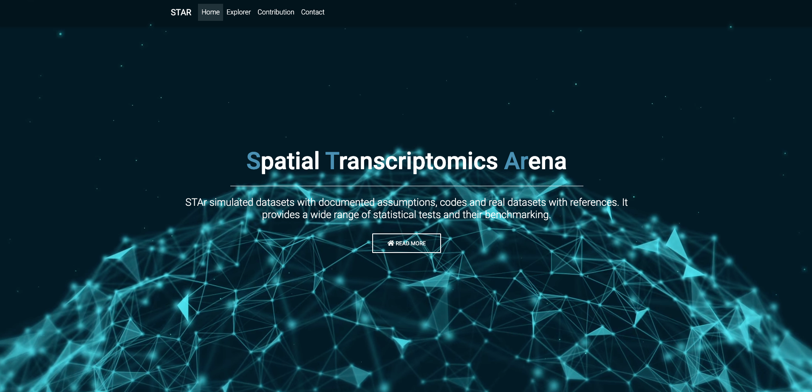

|
Huimin Li (李慧敏)Lecturer ISchool of Mathematical and Statistical SciencesThe University of Texas Rio Grande Valley Office: EMAGC 2.336 Email: huimin.li01@utrgv.edu Google Scholar |
Education
|
Research Interests
|
Selected Publications [Google Scholar]
|  | Robust Bayesian integrative modeling of single cell and spatially resolved transcriptomics data H. Li, B. Zhu, X. Jiang, Y. Ma, L. Xu, and Q. Li bioRxiv:2025.04.22.650087 |
|  | An interpretable Bayesian clustering approach with feature selection for analyzing spatially resolved transcriptomics data H. Li, B. Zhu, X. Jiang, L. Guo, Y. Xie, L. Xu, and Q. Li Biometrics, 2024, Volume 80, Issue 3, ujae066 |
|  | Spatial Transcriptomics Arena (STAr): An integrated platform for spatial transcriptomics methodology research X. Jiang, D. Luo, H. Li, E. Fernández, K. C. Lutz, S. Bedi, J. Yang, Y. Zhan, B. Yao, G. Xiao, X. Zhan, Y. Xie, and Q. Li bioRxiv: 2023.03.10.532127 |
|
Artificiual Intelligence |
|

|
Self pre-training with topology- and spatiality-aware masked autoencoders for 3D medical image segmentation P. Gu*, H. Li*, Y. Zhang, C. Wang, and DZ. Chen In Proceedings of IEEE International Conference on Bioinformatics and Biomedicine (BIBM, 2025) |

|
TopoImages: Incorporating local topology encoding into deep learning models for medical image classification P Gu, H. Wang, Y. Zhang, H. Li, C. Wang, DZ. Chen Pengfei Gu, Hongxiao Wang, Yejia Zhang, Huimin Li, Chaoli Wang, and Danny Z. Chen In Proceedings of the 33rd ACM International Conference on Multimedia (ACM MM, 2025) [Link] |

|
Topo-VM-UNetV2: Encoding topology into vision mamba UNet for polyp segmentation D. Adame, J. Nunez, F. Vazquez, N. Gurrola, H. Li, H. Tang, B. Fu and P. Gu In Proceedings of the 38th IEEE International Symposium on Computer-Based Medical Systems (CBMS, 2025) [Link] |

|
Adapting a segmentation foundation model for medical image classification P. Gu, H. Tang, I. Ebeid, J. Nunez, F. Vazquez, D. Adame, M. Zhan, H. Li, B. Fu and DZ. Chen In Proceedings of the 38th IEEE International Symposium on Computer-Based Medical Systems (CBMS, 2025) [Link] |
Teaching Experience
|
Instructor The University of Texas Rio Grande Valley, Edinburg, TX
|
|
Graduate Teaching Assistant The University of Texas at Dallas, Richardson, TX
|
|
Graduate Teaching Assistant The University of Texas Rio Grande Valley, Edinburg, TX
|
© Huimin Li | Last updated: